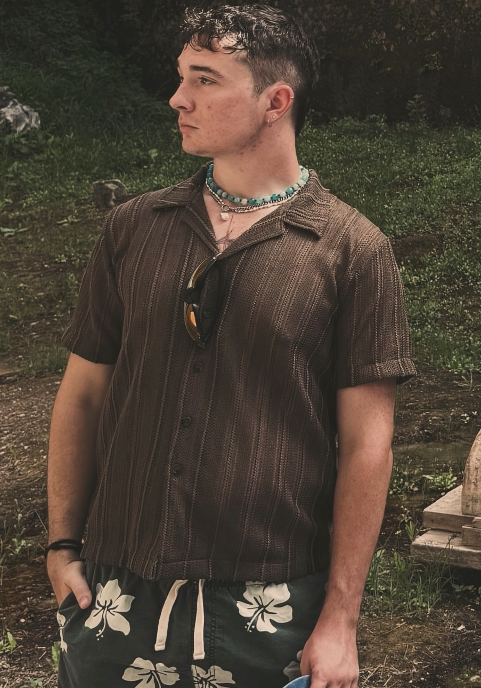

Who am I?
Hi, I’m Michael Watson, a Business and Marketing student at Arizona State University with a strong interest in social media marketing, branding, digital design, and the music industry. I enjoy combining creativity with business strategy to develop ideas that connect with people and help brands build stronger identities.
My experience has allowed me to work in both customer-facing and creative environments. Through my work at Dutch Bros, I’ve developed strong communication, teamwork, adaptability, and customer service skills while working in a fast-paced environment. I’ve also gained experience with Advanced Body Design Wellness, where I helped create standard operating procedures, welcomed clients, scheduled appointments, and contributed to the design and development of the company’s website.
Outside of work and school, I enjoy building my own creative projects and developing my skills in digital marketing and design.
I’ve grown a social media presence that has reached thousands of people, including generating over 10,000 monthly accounts reached on Instagram and gaining 1,000 TikTok followers within three days. These experiences have helped me better understand audience engagement, content strategy, branding, and the rapidly changing world of social media.
As I continue my education at ASU, my goal is to gain more hands-on experience in marketing, social media, design, and the music business. I’m always looking for opportunities to learn, collaborate, and challenge myself creatively while building a career that combines business strategy with my passion for digital media and creativity.